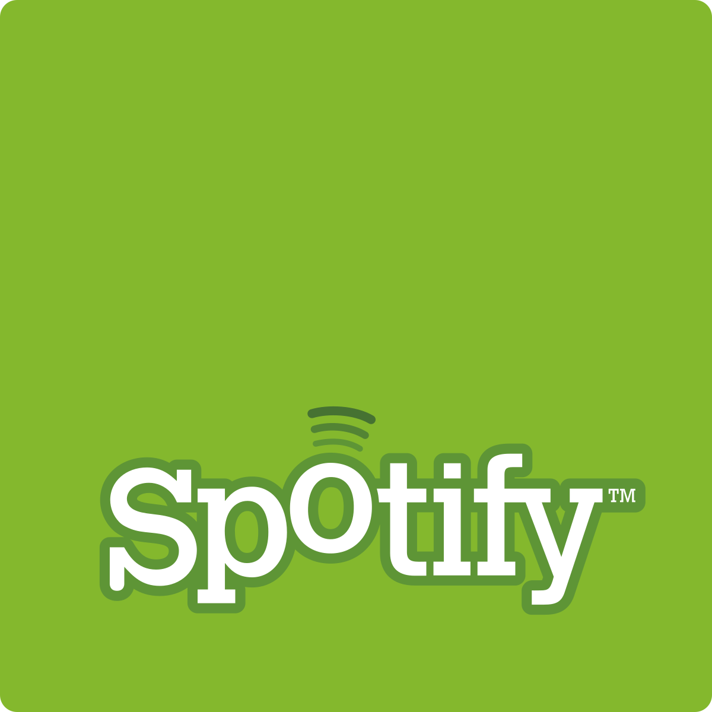

Provavelmente você já usou — ou pelo menos ouviu falar — do Spotify, a maior plataforma de streaming de música do mundo. Mas você sabe como surgiu o nome "Spotify"? E qual o significado por trás do seu icônico logo verde com ondas sonoras? Neste artigo, vamos contar um pouco da trajetória visual e conceitual dessa marca que revolucionou a forma como ouvimos música.
A Primeira Versão
O Spotify foi fundado em 2006, na Suécia, pelos empreendedores Daniel Ek e Martin Lorentzon. A ideia surgiu como resposta à crescente pirataria digital que dominava a internet na época, oferecendo uma alternativa legal, acessível e prática para ouvir música online.
Curiosamente, o nome "Spotify" teria surgido de maneira acidental. Segundo relatos, durante uma sessão de brainstorming, um dos fundadores teria entendido errado uma sugestão dita em voz alta. O mal-entendido acabou soando bem, e os dois gostaram tanto da palavra que logo checaram a disponibilidade do domínio — e, felizmente, ele estava livre.
Spotify não tem um significado literal, mas hoje é sinônimo de música em qualquer lugar, a qualquer hora.

Evolução do Logo
O logo do Spotify também passou por grandes transformações ao longo do tempo. A primeira versão era bem mais descontraída: letras em fonte arredondada e um simpático rostinho sorridente, com ondas saindo da cabeça, tentando transmitir a leveza e o prazer de ouvir música.
Com o crescimento da plataforma, a identidade visual precisou acompanhar sua evolução. A partir de 2013, o design foi simplificado e ganhou um ar mais moderno. A paleta de cores também foi reformulada, adotando o verde vibrante que conhecemos hoje — uma escolha ousada que ajudou o aplicativo a se destacar em meio aos ícones escuros e sóbrios de outros serviços.
Logo atual
Hoje, o logo é representado por um círculo verde contendo três linhas curvas horizontais. Essas linhas simbolizam ondas sonoras, reforçando a ideia de transmissão e movimento contínuo — elementos fundamentais no conceito de streaming.

Além da cor chamativa, a simplicidade do logo foi uma decisão estratégica. Um design limpo e reconhecível em diferentes tamanhos e dispositivos era essencial para consolidar a marca globalmente. E funcionou: o símbolo se tornou quase tão icônico quanto o próprio nome.
Com uma mistura de sorte, estratégia e inovação, o Spotify se firmou não apenas como um serviço de streaming, mas como uma verdadeira marca cultural — com um logo que diz muito com muito pouco.